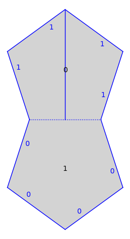
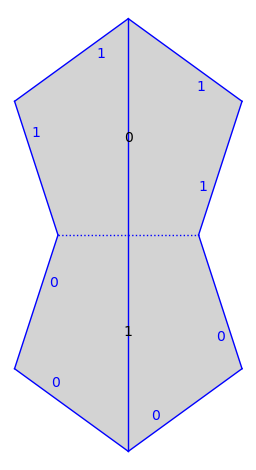
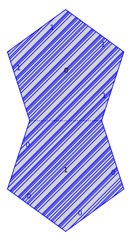

Straight-line flow¶
Initial version by Pat Hooper whooper@ccny.cuny.edu, Dec 16, 2017.
from flatsurf import *
Acting on surfaces by matrices.¶
s = translation_surfaces.veech_double_n_gon(5)
s.plot()

Defines the tangent_bundle on the surface defined over the base_ring of s.
TB = s.tangent_bundle()
baricenter = sum(s.polygon(0).vertices())/5
Define the tangent vector based at the baricenter of polygon 0 aimed downward.
v = TB(0, baricenter, (0,-1))
Convert to a straight-line trajectory. Trajectories are unions of segments in polygons.
traj = v.straight_line_trajectory()
s.plot()+traj.plot()

Flow into the next $100$ polygons or until the trajectory hits a vertex.
traj.flow(100)
s.plot()+traj.plot()

We can tell its type.
traj.is_saddle_connection()
True
You can also test if a straight-line trajectory is closed or a forward/backward separatrix.
Lets do it again but in the slope one direction.
v = TB(0, baricenter, (1,1))
traj=v.straight_line_trajectory()
traj.flow(100)
s.plot()+traj.plot()

We remark that it follows from work of Veech that the slope one direction is ergodic for the straight-line flow.